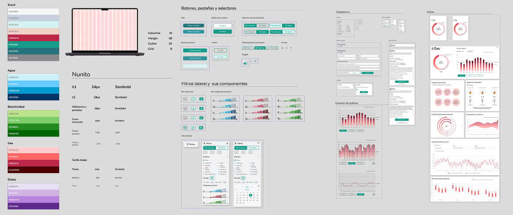

— 01 · PRÁCTICA · PROYECTO PROFESIONAL
DATALOG
Dashboard de consumo de servicios públicos — agua, gas y electricidad. Visualización de datos intuitiva con insights personalizados de sostenibilidad para traducir datos complejos en pantallas accesibles.
✦ OVERVIEW
Plataforma web para monitorear y optimizar el consumo de servicios públicos — agua, gas y electricidad. El foco del proyecto fue traducir datos complejos en pantallas accesibles para todo tipo de usuarios, desde hogares hasta gestores de edificios.

Contexto
Datalog es una plataforma que permite monitorear y optimizar el consumo de servicios públicos — agua, gas y electricidad.
Al convertir datos complejos en visualizaciones claras, ayuda a tomar decisiones informadas y conservar recursos.
Ofrece insights personalizados en tiempo real para comparar el consumo con hogares similares y adoptar prácticas más sostenibles.
Desafío
Datalog busca consolidar todos los datos de consumo en una única plataforma adaptada a cada individuo.
El desafío fue visualizar información compleja de manera efectiva, personalizando al mismo tiempo las recomendaciones.
Buscamos formas innovadoras de presentar los datos para que los usuarios recibieran sugerencias según sus patrones únicos de consumo.
Objetivo
El objetivo principal fue transformar datos complejos en pantallas amigables. Para lograrlo nos enfocamos en:
— Analizar los datos para proporcionar insights valiosos.
— Ayudar a comprender el consumo y ofrecer sugerencias para actividades más sostenibles.
— Diseñar wireframes atractivos, accesibles e intuitivos para todo tipo de usuarios.
